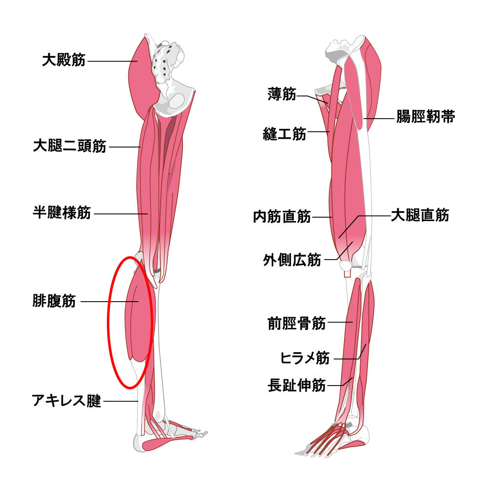

シンスプリント（脛骨過労性骨膜炎）
シンスプリントとは
シンスプリントとは、走ることの多い競技（マラソン、サッカー、バスケットボールなど）をする方に起こる、すねの内側のやや後ろ寄りのところに痛みと炎症が発生するスポーツ障害です。
悪化すると運動や日常生活に支障をきたすようになります。
男性では13歳頃から発生し、平均18.5歳、女性では12歳から発生し平均16.9歳と、女性ではやや早い年齢から起こりやすいと報告されています。
骨の表面にある膜（骨膜）の炎症が原因と言われているものの不明な点も多く、MTSS（Medial Tibial Stress Syndrome：内側脛骨ストレス症候群）とも呼ばれます。

症状
運動中や運動後に、すねの内側がズキズキと痛む
放置すると疲労骨折に進行することもある
原因
痛みが出る場所には足を蹴るために必要な筋肉がいくつもついているため、それらの筋肉に強く引っ張られることで痛みが発生すると考えられています。
また、以下のことも発生の要因となります。
ランニングの量が急に増えた、ランニングを始めた
扁平足（土踏まずが浅い足）など負担のかかりやすい特徴を持っている
足首がかたい、筋力不足
固いグラウンドや路面での練習
クッション性の悪いシューズの使用
診断
疲労骨折など他の疾患がないかレントゲン検査を行いますが、シンスプリントの場合は特に異常所見はありません。
診断に最も有用と思われるのはMRIで、痛みの場所に信号変化があれば診断が可能なだけでなく、信号変化の範囲や程度で重症度の判定をできるという利点があります。
超音波でも詳細な評価が可能であるという意見もあり、大がかりな準備が必要なく、気軽に受けられるという利点があります。
治療
運動ができる程度の痛みであれば、練習量を減らし原因への対策を考えていきます。
足首の可動域を改善するためのストレッチ、筋力不足を補うためのトレーニングを行います。
もし扁平足（土踏まずが浅い足）であれば、インソール（靴底）を入れて足にかかる負担を軽減するようにします。
練習後に自分で氷によるアイスマッサージやアイシングを行うことも効果的です。
もし運動が難しいほどの痛みがある場合は、少なくとも6週間程度の安静期間を取る必要があります。
参考文献
下腿のスポーツ障害－病態・評価・治療－
日本整形外科スポーツ医学会ホームページ「シンスプリント」
下腿の痛み 服部惣一 臨床スポーツ医学33